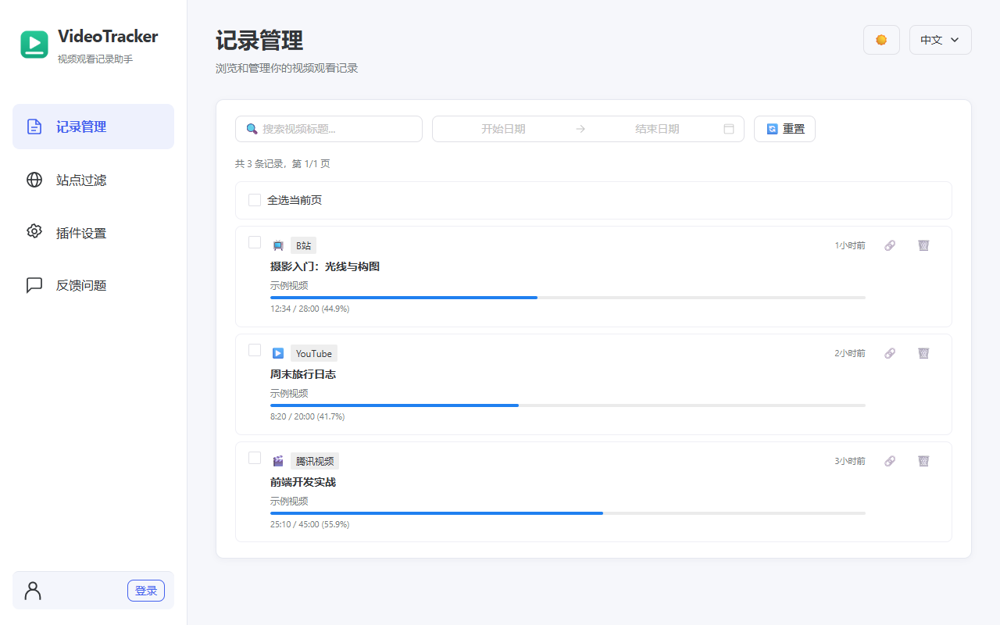
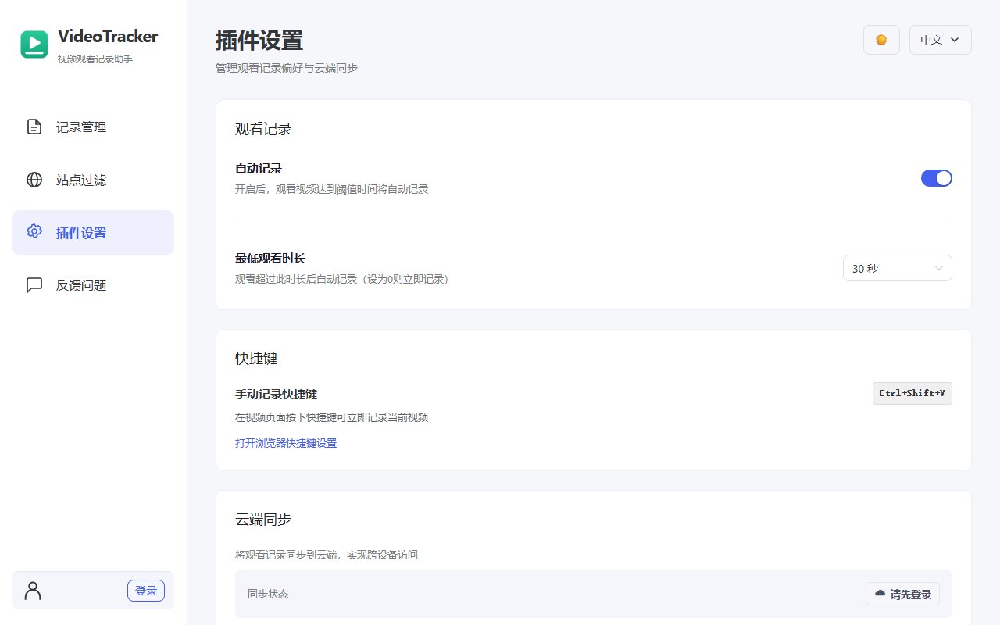
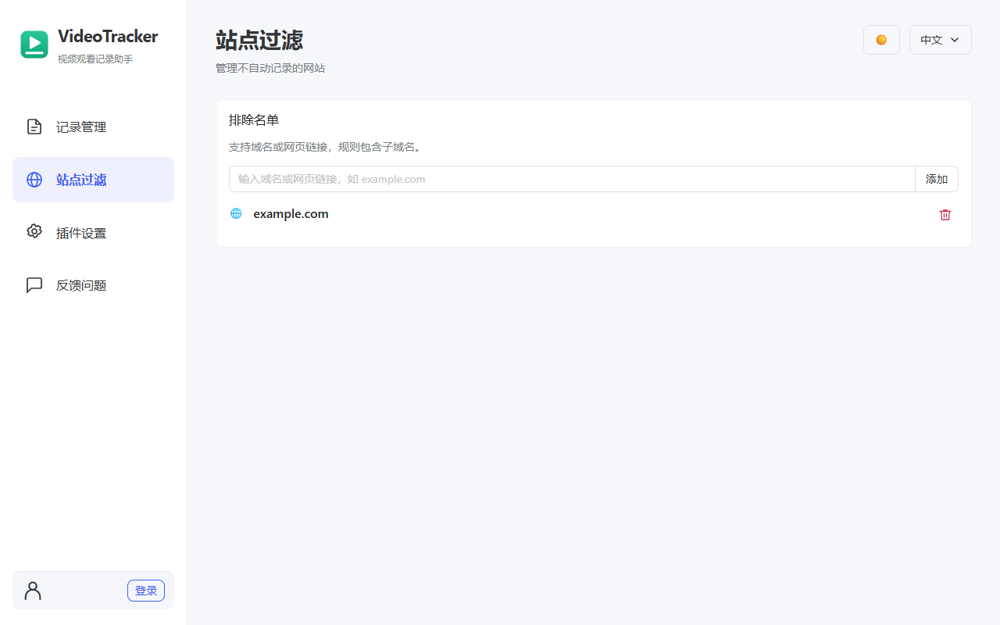
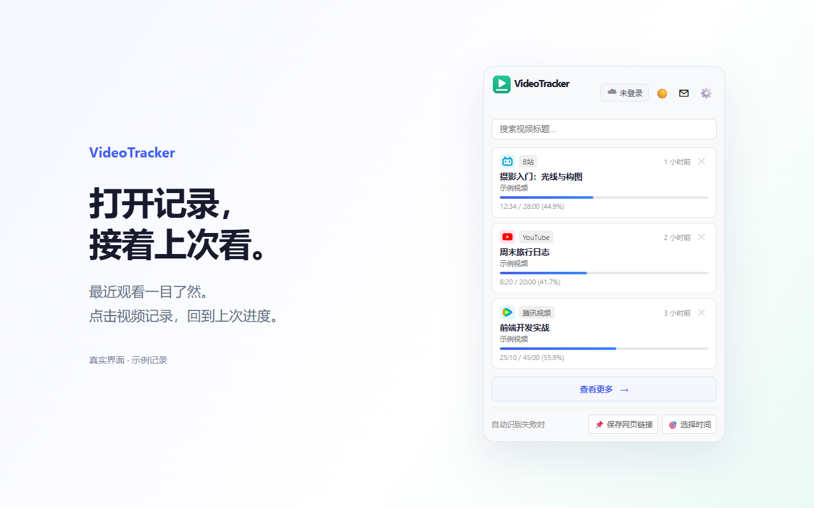
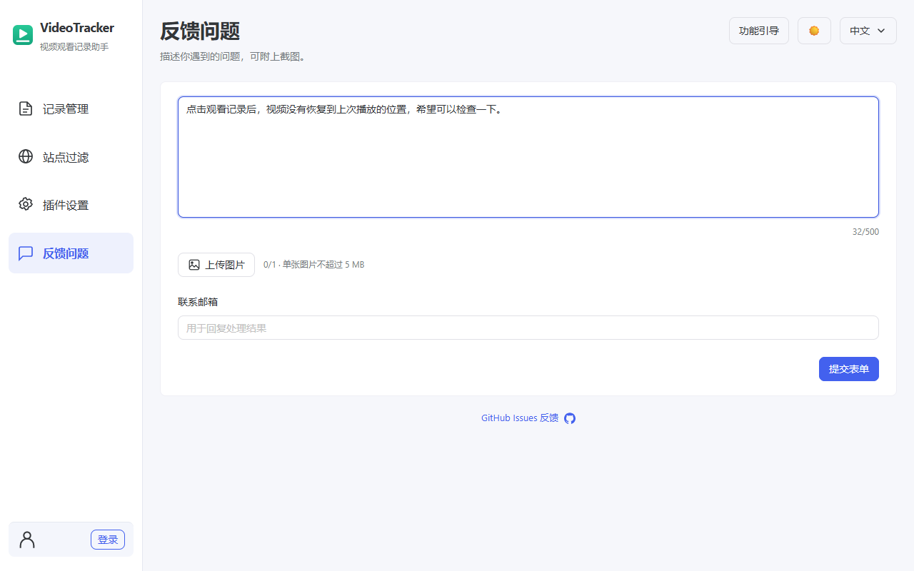
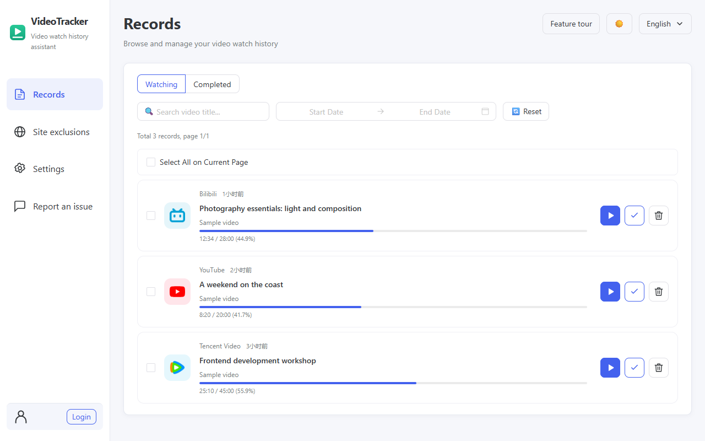
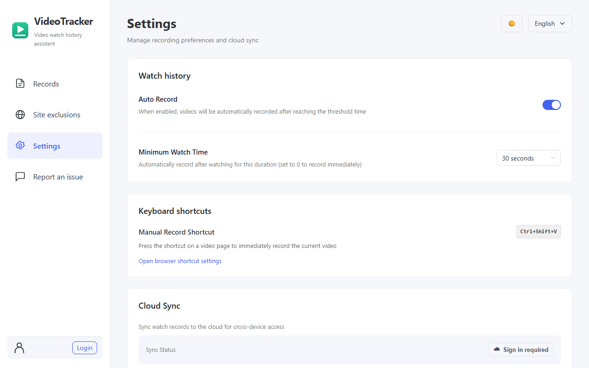
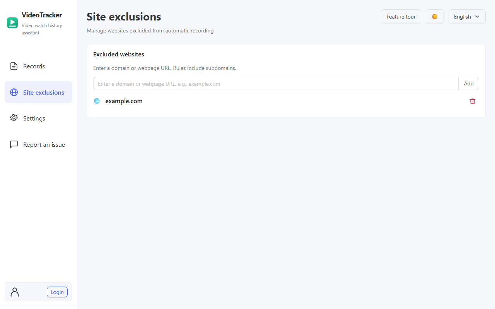
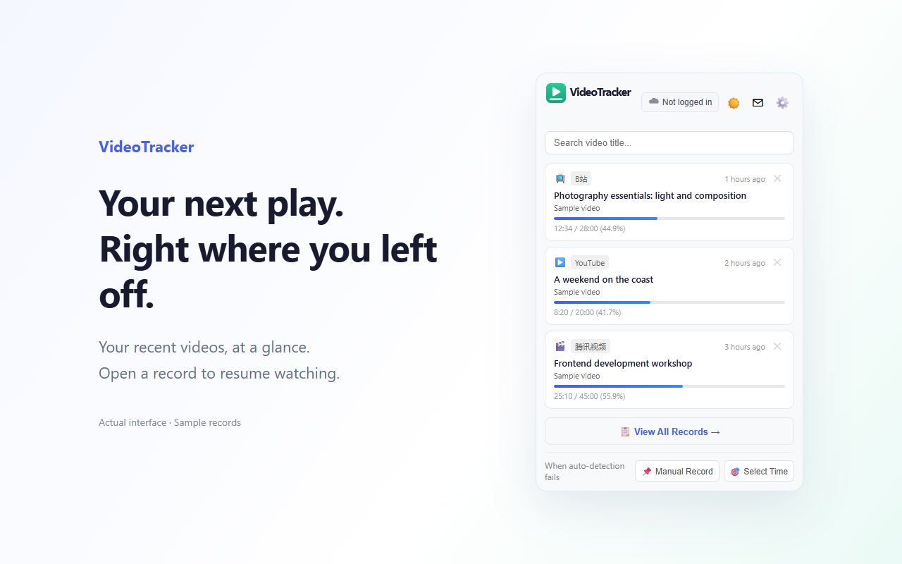
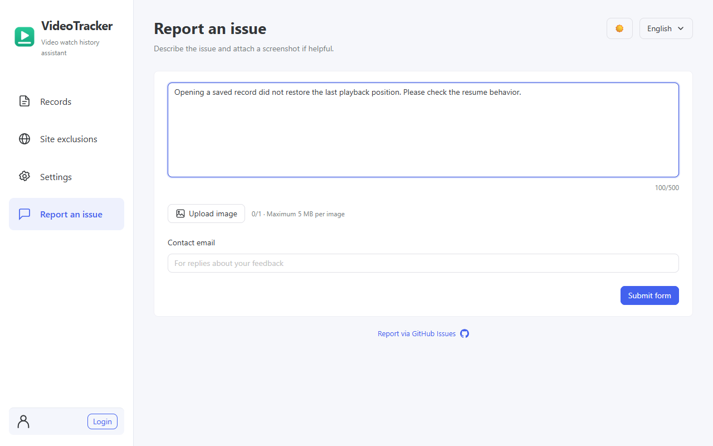

资料更新：2026-10-13。仅同步仓库，未上传商店、未提交审核。匹配的 0.0.13 安装包已在本地构建，文件及校验值见 delivery.json。
使用说明 · 统一文案与审核说明 · 资料状态 · 完整隐私政策
记录 B站、YouTube 等视频网站的观看进度，一键继续观看。默认本地存储，无需账号；可选端到端加密云同步。
当前源码 0.0.13 更新说明（2026-10-13） • 站点过滤改为排除名单，支持粘贴网页链接及子域名匹配；移出名单恢复自动记录，保留已有记录。 • 新增插件内反馈：最多 500 字、单张不超过 5 MB 的图片、可选邮箱，首次提交前确认用途，失败保留内容。 • 简化记录页与弹窗搜索；记录页按标题、分集信息和日期筛选，支持批量删除。 • 更新中英文布局、同步状态、快捷键说明及与当前功能一致的隐私披露。





全部字段 · 详情文本 · 440×280 宣传图 · 1400×560 宣传图
Save and resume video progress across sites. Local storage, no account required. Optional end-to-end encrypted cloud sync.
Current source 0.0.13 update notes (2026-10-13) • Site filters now use an exclusion list: add a domain or webpage URL to stop automatic recording for it and its subdomains; remove it to restore recording. Saved records stay. • New feedback page: up to 500 characters, one optional PNG/JPG/WebP image up to 5 MB, optional email and first-submission consent. Failed submissions keep the draft. • Simplified popup and records search; records can be filtered by title, episode and viewing date, with batch deletion. • Updated bilingual layout, sync status, shortcut guidance and privacy disclosures.





全部字段 · 详情文本 · 440×280 宣传图 · 1400×560 宣传图